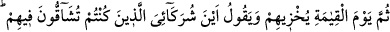
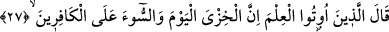

sarsmayı kasdetti de emri, hükmü ve azabı birdenbire geliverdi.
“Üstlerindeki tavan” yâni binalarının tavanı “da tepelerine çöktü.” Yâni o köşkün
önce tavanı onların üzerine geldi yıkıldı, sonra da duvarları üzerlerine yıkıldı. Çünkü
temeli yıkıldıktan sonra bina düşünülemez. “Üstlerindeki” ve “tepelerine” ifâdeleri
onların binânın altında olduğunu bildirmek içindir. Çünkü Araplar içinde olmadıkları
zaman “Ev üzerimize çöktü.” demezler.
Rivâyete göre binanın üzerine korkunç bir rüzgar esti. Üst tarafını denize attı. Geri
kalanı da üstlerine çöktü. Kule çökünce korkudan o gün diller tutuldu. Hepsi birbirine
karıştı, sözleri farklılaştı. Her kavim ayrı bir dilden konuşmaya başladı. Hiçbiri
diğerinin lisanını bilmiyordu. Yetmiş üç ayrı lisan konuşmaya başladılar. Bu yüzden
orası “Bâbil” diye isimlendirildi. Daha önce insanların dili Süryânice idi.
“Bu azab” rüzgârla helâk olma azabı “onlara,” geleceğini “fark edemedikleri bir
yerden geldi.” Halbuki onlar gûyâ kendi zevk ve isteklerine göre onun tersinin
geleceğini bekliyorlardı.
Yâni Ulu Kur’an’a “evvelkilerin masalları” diyerek mü’minlere hîle yapan bu
kimselere de, öncekilerin başlarına geldiği gibi dünyevî azâb beklemedikleri bir anda
gelip çatacaktır.
Dimyâtî der ki: Âyette “azab”dan maksad Nemrûd’un askerlerine musallat olan
sivrisinektir. Lübâb’da şöyle denilmiştir: ‘Hak Teâlâ, Nemrûd’u beynine giden bir
sivrisinekle mübtelâ eyledi. Sivrisinek büyüdü ve dört yüz sene orada kaldı. Bu
müddette azıcık rahat etsin diye dâimâ Nemrud’un başına tokmak vurulurdu.’
Şeyh Ferîdüddîn Attâr (k.s.) Mantıku’t-tayr’da der ki:
Cenâb-ı Hak yarım sivrisineği düşmanın başına nasîb etti
Onu Nemrûd’un başında dört yüz sene tuttu
Cenâb-ı Hak bir zayıfı onun hükmüne verdi
Güçlü düşmanın bıyığını kopardı
27. Sonra kıyâmet gününde (Allah), onları rezil eder ve der ki: “Kendileri
hakkında (mü’minlere) düşman kesildiğiniz ortaklarım nerede?” Kendilerine ilim
verilmiş olanlar derler ki: “Şüphesiz bugün rezillik ve kötülük kâfirleredir.”
Bu, âyet sonuna kadar onların nasıl rezil olduklarını beyân eder. Yukarıda anlatılan
azab onların dünyâdaki azablarıdır. “Sonra kıyâmet gününde (Allah), onları rezil eder”
rüsvâ kılar. Yâni bu iftirâcı ve hîlecileri, kendilerinden öncekilerle birlikte hepsini,